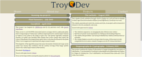
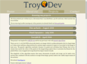
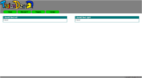

<div class="row">
	<div class="column">
		<div class="box">
			<h1 class="box_heading">Development log</h1>
			<div class="content">
				<div class="box">
					<h2 class="box_heading">~ August 2014 ~</h2>
					<div class="content">
						<p>This constitutes my first development log written on this site, despite being
							completely ignored for the last 11 months, over the last few days the page has really come a
							long way. I've settled on a layout, I've battled cross browser glitches and I've greatly
							improved my skills in javascript and php.</p>
						<p>I'm fairly happy with the design of the site, and while I know it is a little
							unconventional, I think it is clean and efficient and allows for bite-sized portions of
							information, which are easily focused on within the sea of data present. Being colourblind,
							I've relied heavily on the suggestions from others on the colour scheme however I have not
							had a great consensus from all, and am naturally unsure of the current scheme!</p>

						<div class="box_break"></div>
						<a href="img/website082014.png" data-lightbox="website082014"
							data-title="On wide screens there are two columns of content which automatically rearrange themselves as the page changes dimesion and content is minimised.">
							
						</a> <a href="img/website082014tablet.png" data-lightbox="website082014"
							data-title="On a thinner screen the two columns of content collapse into a single one.">
							
						</a>
						<div class="box_break"></div>
						<p>My main achievments for this build are:</p>
						<ul>
							<li>The website is responsive, The site should be easily accessible and uncluttered on
								all sized screens,</li>
							<li>Content is divided up into boxes, each of which can be minimised and maximised by
								clicking on the box's title,</li>
							<li>The website 'fails gracefully', if an older browser doesn't support a feature or if
								javascript is disabled the website still functions as intended.</li>
							<li>The website displays correctly on all up to date browsers, old browsers are also
								compatable however minor cosmetic changes occur for IE versions less than 8.</li>
						</ul>
					</div>
				</div>
				<div class="box">
					<h2 class="box_heading start_minimised">~ September 2013 ~</h2>
					<div class="content">
						<p>
							<i>This content has been moved over from my blogger account</i>
						</p>
						<p>I've been meaning to make a wesite for a very long time, I'm hoping that it will allow
							me to create more interactive content and provde a neater way to include extensive
							development logs. The website will also be a project in its own right and hopefully will act
							both as a portfolio for my work and a prime example of it too.</p>
						<p>I have so far only played around with some html and css, I've also made a tempory logo
							in paint, the result is hideous and unhosted but I'm looking into hosting it on my dropbox or
							even github!</p>
						<p>From the image below you can see the seeds of the current design taking shape, though
							it is /very/ basic!</p>
						<div class="box_break"></div>
						<a href="img/website072013.png" data-lightbox="website082014"
							data-title="Oh God, its awful, avert your eyes!"> 
						</a>
					</div>
				</div>
			</div>
		</div>
	</div>
</div>